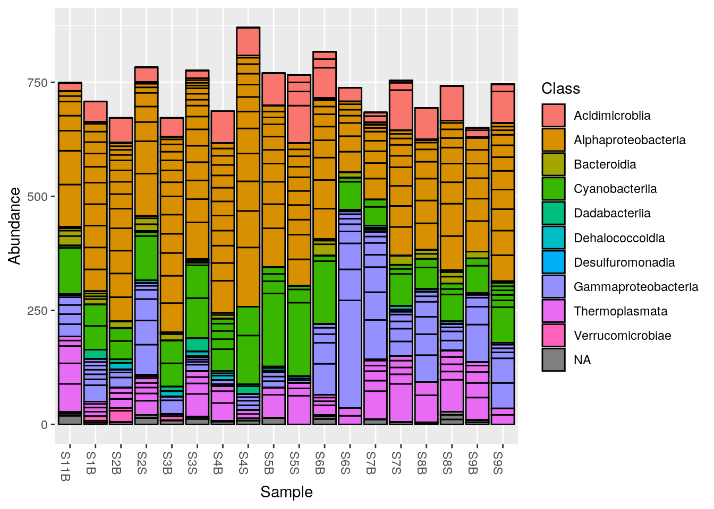
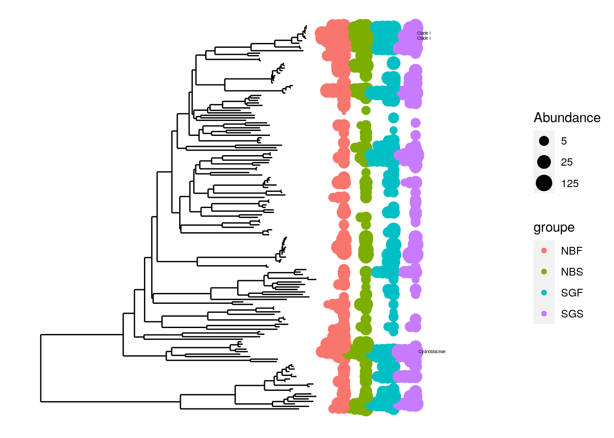

library(phyloseq)Preprocessing : phyloseq
asv_table <- readRDS(here::here("outputs",
"dada2",
"asv_table",
"seqtab_nochim.rds"))
taxonomy <- readRDS(here::here("outputs",
"dada2",
"asv_table",
"taxonomy.rds"))
context <- read.table(here::here("data",
"context",
"mapfileFA.txt"),
header = TRUE,
row.names = 1)
head(context) Geo Description groupe Pres PicoEuk Synec Prochloro NanoEuk Crypto SiOH4
S1B North North1B NBF 52 660 32195 10675 955 115 1.813
S2B North North2B NBF 59 890 25480 16595 670 395 2.592
S2S North North2S NBS 0 890 25480 16595 670 395 3.381
S3B North North3B NBF 74 835 13340 25115 1115 165 1.438
S3S North North3S NBS 0 715 26725 16860 890 200 1.656
S4B North North4B NBF 78 2220 3130 29835 2120 235 2.457
NO2 NO3 NH4 PO4 NT PT Chla T S Sigma_t
S1B 0.256 0.889 0.324 0.132 9.946 3.565 0 22.7338 37.6204 26.0046
S2B 0.105 1.125 0.328 0.067 9.378 3.391 0 22.6824 37.6627 26.0521
S2S 0.231 0.706 0.450 0.109 8.817 3.345 0 22.6854 37.6176 26.0137
S3B 0.057 1.159 0.369 0.174 8.989 2.568 0 21.5296 37.5549 26.2987
S3S 0.098 0.794 0.367 0.095 7.847 2.520 0 22.5610 37.5960 26.0332
S4B 0.099 1.087 0.349 0.137 8.689 3.129 0 18.8515 37.4542 26.9415asv_seq <- colnames(asv_table)
asv_id <- sapply(asv_seq,
function(x) digest::digest(x, algo = "sha1")) |> unname()
row.names(taxonomy) <- colnames(asv_table) <- names(asv_seq) <- asv_id1 Get a phyloseq object
1.1 Check sample file
Make sure sample names are the same as in the ASV table
row.names(context) [1] "S1B" "S2B" "S2S" "S3B" "S3S" "S4B" "S4S" "S5B" "S5S" "S6B"
[11] "S6S" "S7B" "S7S" "S8B" "S8S" "S9B" "S9S" "S11B"row.names(asv_table) [1] "S11B" "S1B" "S2B" "S2S" "S3B" "S3S" "S4B" "S4S" "S5B" "S5S"
[11] "S6B" "S6S" "S7B" "S7S" "S8B" "S8S" "S9B" "S9S" setdiff(row.names(asv_table), row.names(context))character(0)1.2 Assemble ASV table, taxonomy and contextual data
physeq <- phyloseq::phyloseq(
phyloseq::otu_table(asv_table, taxa_are_rows = FALSE),
phyloseq::tax_table(taxonomy),
sample_data(context))2 Add the ASV sequences to your Phyloseq object & change ASV ID
nucl <- Biostrings::DNAStringSet(asv_seq)
physeq <- merge_phyloseq(physeq, nucl)3 XIII- Phylogenetic Tree
NB: This step can be skipped if you have some problems to perform it or to many ASVs.
3.1 Alignment by DECIPHER
aln <- DECIPHER::AlignSeqs(refseq(physeq), anchor = NA) Determining distance matrix based on shared 8-mers:
================================================================================
Time difference of 0.5 secs
Clustering into groups by similarity:
================================================================================
Time difference of 0.03 secs
Aligning Sequences:
================================================================================
Time difference of 2.09 secs
Iteration 1 of 2:
Determining distance matrix based on alignment:
================================================================================
Time difference of 0.04 secs
Reclustering into groups by similarity:
================================================================================
Time difference of 0.04 secs
Realigning Sequences:
================================================================================
Time difference of 0.94 secs
Iteration 2 of 2:
Determining distance matrix based on alignment:
================================================================================
Time difference of 0.04 secs
Reclustering into groups by similarity:
================================================================================
Time difference of 0.04 secs
Realigning Sequences:
================================================================================
Time difference of 0.22 secs#See alignment
DECIPHER::BrowseSeqs(aln, highlight=0)3.2 Transformed by Phydat for distance matrix/tree
phang.align <- phangorn::phyDat(as(aln, "matrix"), type="DNA")3.2.1 Build distance matrix
#Distance matrix
dm <- phangorn::dist.ml(phang.align)
#NJ tree
treeNJ <- phangorn::NJ(dm)
#root
treeNJ<- phangorn::midpoint(tree = treeNJ)
physeq <- merge_phyloseq(physeq, treeNJ)plot_bar(physeq, fill = "Class")
plot_tree(physeq, color = "groupe", label.tips = "Family", ladderize = "left", justify = "left" , size = "Abundance")